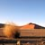
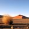

Déserts de monde
A chaque désert son voyage, ses couleurs...

Que dit le désert ? Que signifie-t-il ?"Le désert est un être poétique". Vous, pour commencer, une vérité ontologique à soutenir car elle n'induit point en erreur. On ne saurait discourir sur le désert sans penser prealablement à la notion de " vide ". En effet, le premier sentiment qui s'empare de nous lorsque évoque le désert, c'est len sentiment de vide.
On imageine l'espace. On imagine son immensité. On imagine sa vacuité et sa dureté. Dans l'inconscient collectif universel. le désert notamment lié au sentiment de perte et d'errance. Il est sans conteste la métaphore de la solitude et de l'isolement. Toutefois, le désert, bien qu'il soit visiblement vide, est un espace peuplé de secrets et de métaphores qui définissent plus l'être énigmatique qu'il est que le simple espace exposé à l'oeil. Phénoménologiquement parlant, pour comprendre le désert, il faut vivre l'expérience du désert.
Il faut entrer en télescopage avec lui afin d'en débuire le sens et la signification. En principe, nulle présence (humaine ou autre) ne peut prétendre signifier intrinséquement. Toute signification, toute connaissance est une expérience. Ainsi, la signification est-elle plutôt extrinséque. Elle émane d'une expérience externe exercée librement par l'autre sur le même. Dans cette perspective, le désert, objet de reflexion, est à considérer comme état un livre, un texte à draguer, à séduire inlassablement afin de ganger sa confiancen son intimité et sa foi. Il faut y voir un " visage ", ""le commencement même de la philosophie " (Emmanuel Lévinas, Entre nous, Grasset et Fasquelle, 1991.) En fait, le désert s'expose au regard comme s'il s'agissait d'un visage, l'épreuve de l'infini.
Top 5 déserts du monde
- Le désert de Gobi
- La vallée de la mort
- Le désert du Sahara
- Le désert de Gibson
- Le massif des Aurès
Galerie


 
